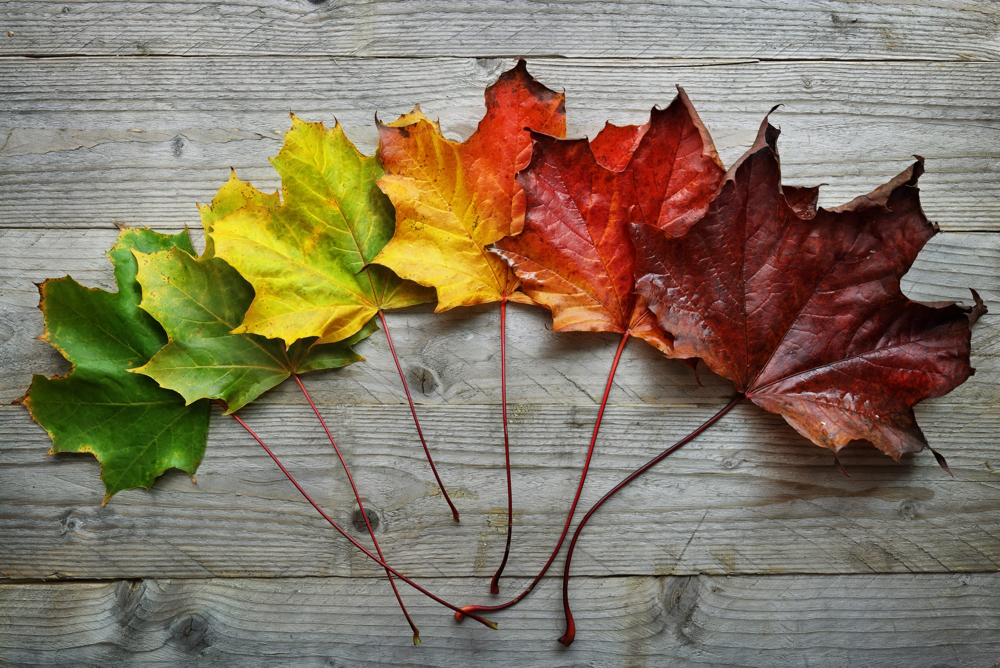

Seasons: Haiku
Jim Milks
Spring: Haiku Life awakening Flower opens in the sun A world is reborn Summer: Haiku Warm sun on the ground A flower growing stronger Life under the sun Fall: Haiku Darkening Shadows Flower drifts to gentle sleep The world is resting Winter: Haiku Blankets of cold white Flower hidden from the cold Life waiting for spring
Seasons
Christina Georgina Rossetti
Oh the cheerful Budding-time! When thorn-hedges turn to green, When new leaves of elm and lime Cleave and shed their winter screen; Tender lambs are born and 'baa,' North wind finds no snow to bring, Vigorous Nature laughs 'Ha, ha,' In the miracle of spring. Oh the gorgeous Blossom-days! When broad flag-flowers drink and blow, In and out in summer-blaze Dragon-flies flash to and fro; Ashen branches hang out keys, Oaks put forth the rosy shoot, Wandering herds wax sleek at ease, Lovely blossoms end in fruit. Oh the shouting Harvest-weeks! Mother earth grown fat with sheaves Thrifty gleaner finds who seeks; Russet-golden pomp of leaves Crowns the woods, to fall at length; Bracing winds are felt to stir, Ocean gathers up her strength, Beasts renew their dwindled fur. Oh the starving Winter-lapse! Ice-bound, hunger-pinched and dim; Dormant roots recall their saps, Empty nests show black and grim, Short-lived sunshine gives no heat, Undue buds are nipped by frost, Snow sets forth a winding-sheet, And all hope of life seems lost.